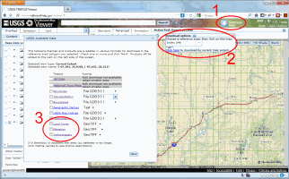
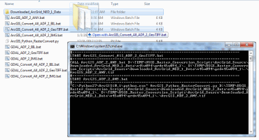
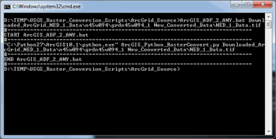

These directions assume that ArcGIS 10 or 10.1 have already been installed with their default install locations.
| Step | Description | Screenshot | ||||
| 1 | Obtain JP2 Data |  | ||||
| The primary method for downloading The National Map (TNM) raster JP2 (High Resolution Orthoimagery (HRO) and National Agricultural Imagery Program (NAIP)) type of staged products is by using the TNM Viewer (http://viewer.nationalmap.gov/viewer/). Zoom to the area of interest and then use the download data link at the top (1). Select the data search extent (2), and one or more of the raster staged products (3). This will provide a list of all the products available in that extent. Select the appropriate products and choose next to add them to the shopping cart. Once you checkout an email will be sent with URL's for downloading the staged products. Use the links provided in the email to download the data, and then unzip (NAIP comes as a JP2 file - no need to unzip) the resulting files on your local computer. More information on downloading data from The National Map is available at http://viewer.nationalmap.gov/help/9.0 TNM Cart Tab.htm |
||||||
| 2 | Obtain USGS Raster Conversion Scripts |  |
||||
| A set of scripts for converting raster staged data is available at http://gisdata.usgs.gov/website/USGS_Raster_Conversion_Scripts.zip. These should be downloaded and unzipped locally. (These directions are part of the how to documentation in that archive.) | ||||||
| 3a | Option 1: Drag and Drop JP2 Download Folder |  | ||||
| The ArcGIS_Convert_All_JP2_2_IMG.bat script takes a folder name as input and recursively scans that folder for all TIF files and attempts to create a IMG for each. In windows explorer when you drag and drop a folder onto a batch file, the folder path is passed as the parameter to run that batch file with. Doing this produces a IMG in that same folder as the JP2 data. The resulting image(s) will have the name ArcGIS_JP2_2_ANY.img. | ||||||
| 3b | Option 2: Run the ArcGIS_JP2_2_ANY.bat on the command line |  | ||||
|
The ArcGIS_JP2_2_ANY.bat file uses a tif file location for the first parameter which is the source to convert. This script will not recursively scan the sub-directories to find the data, so the path must point to the actual JP2 file. A second parameter that is optional allows you to specify the path and name of the output JP2 file.
Since the second parameter is optional, the easiest way to run this is to drag and drop the ArcGrid data folder onto the batch file. The catch is that the default conversion is to IMG format. This means to get a JP2 output, we need to specify the second parameter by running this on the command line. The script uses the file extension of the second parameter to determine the correct output type. The directions for using this script are presented below:
|
||||||